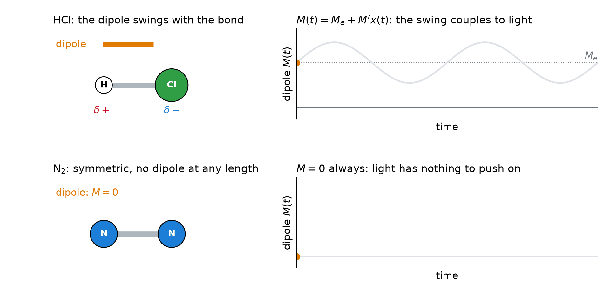
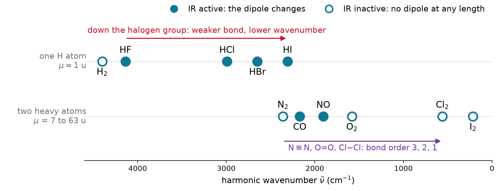
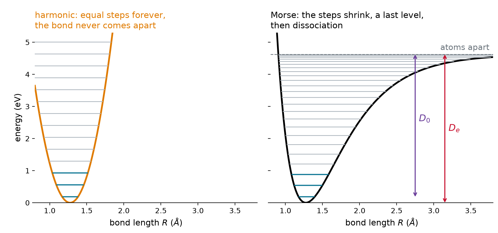
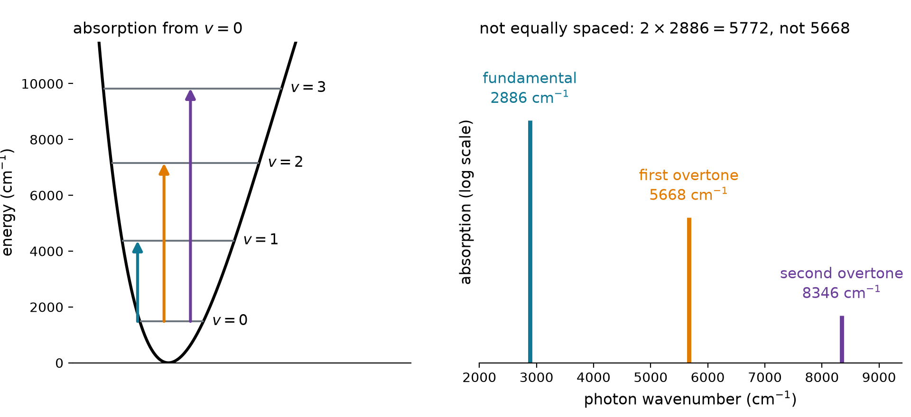
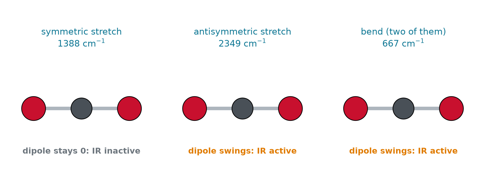
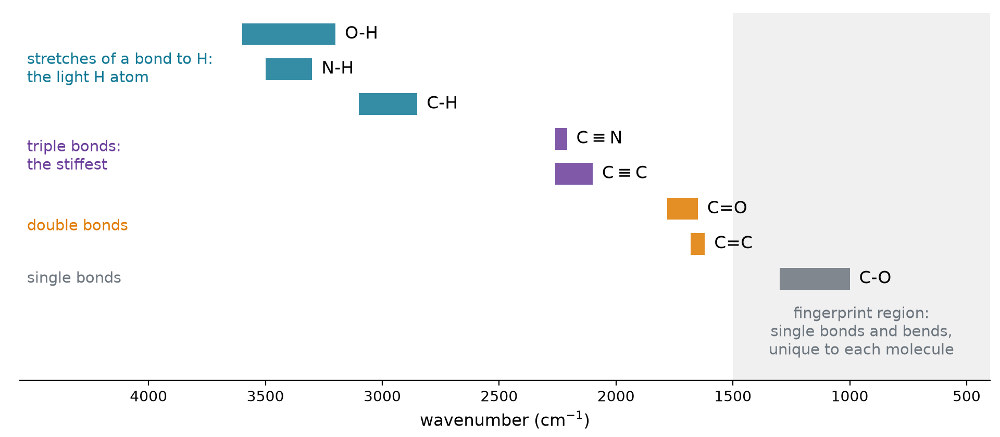
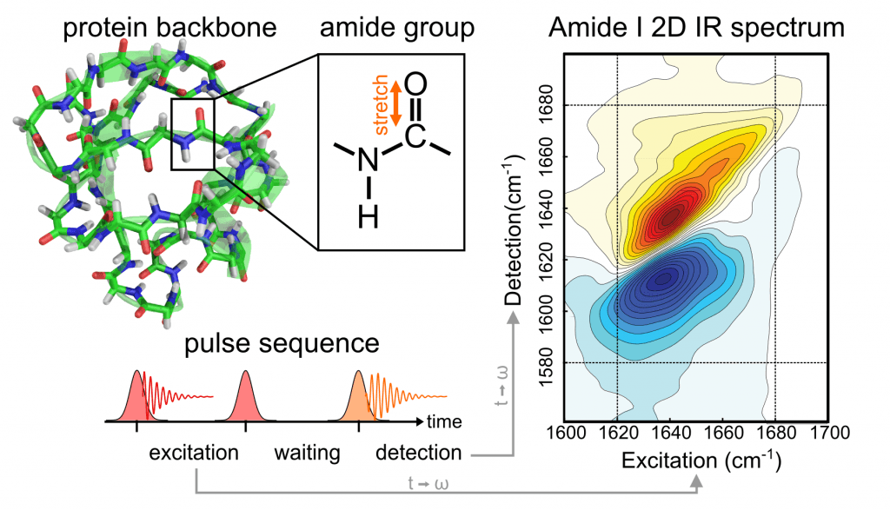
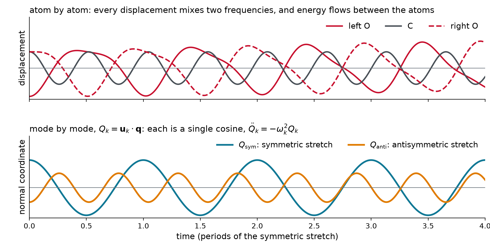

Chem 3240 · Lecture 4.3
A photon is absorbed when h\nu matches a gap. Spectroscopists measure light in wavenumbers, \tilde{\nu} = 1/\lambda:
E = h\nu = \frac{hc}{\lambda} = hc\,\tilde{\nu}
G(v) = \frac{E_v}{hc} = \tilde{\nu}\left(v + \frac{1}{2}\right), \qquad \tilde{\nu} = \frac{1}{2\pi c}\sqrt{\frac{k}{\mu}}
| quantity | value | what it tells you |
|---|---|---|
| 1 cm^{-1} | 1.24\times10^{-4} eV = 0.0120 kJ/mol | the conversion factor hc |
| 1 eV | 8066 cm^{-1} | chemical bonds: a few eV |
| k_BT at 300 K | 208 cm^{-1} | below this, levels are warm |
| bond vibrations | 200 to 4400 cm^{-1} | 2.3 to 50 μm: the infrared |
HCl absorbs at 2886 cm^{-1}. Find the wavelength, frequency and photon energy, and compare with k_BT = 208 cm^{-1}.
\lambda = \frac{1}{\tilde{\nu}} = 3.47\ \mu\text{m}, \qquad \nu = c\tilde{\nu} = 8.65\times10^{13}\ \text{Hz}
E = hc\tilde{\nu} = 0.358\ \text{eV} = 34.5\ \text{kJ/mol} \approx 14\,k_BT
Light’s electric field pushes + and - charges apart: it couples to the dipole moment M (here \mu is the reduced mass)
M(x) = M_e + M'x + \dots, \qquad M' = \left(\frac{\partial M}{\partial x}\right)_{R_e}
\langle v'|\hat{M}|v\rangle = M_e\,\langle v'|v\rangle + M'\,\langle v'|\hat{x}|v\rangle + \dots

\langle v'|\hat{M}|v\rangle \approx M'\,\langle v'|\hat{x}|v\rangle, \qquad M' = \left(\frac{\partial M}{\partial x}\right)_{R_e}

^{12}C^{16}O absorbs at 2143 cm^{-1}. Where does ^{13}C^{16}O absorb? (Same k: the electrons do not change.)
\mu(^{12}\text{C}^{16}\text{O}) = 6.856\ \text{u}, \qquad \mu(^{13}\text{C}^{16}\text{O}) = 7.172\ \text{u}
\tilde{\nu} = 2143\ \text{cm}^{-1}\times\sqrt{\frac{6.856}{7.172}} = 2095\ \text{cm}^{-1} \quad\text{(measured: 2096)}

G(v) = \tilde{\nu}_e\left(v + \frac{1}{2}\right) - \tilde{\nu}_ex_e\left(v + \frac{1}{2}\right)^2
\tilde{\nu}_{0\to v} = v\,\tilde{\nu}_e - v(v + 1)\,\tilde{\nu}_ex_e

HCl: fundamental 2886 cm^{-1}, first overtone 5668 cm^{-1}. Find \tilde{\nu}_e and \tilde{\nu}_ex_e; predict the second overtone.
\tilde{\nu}_e - 2\tilde{\nu}_ex_e = 2886, \qquad 2\tilde{\nu}_e - 6\tilde{\nu}_ex_e = 5668
\tilde{\nu}_ex_e = 52\ \text{cm}^{-1}, \qquad \tilde{\nu}_e = 2990\ \text{cm}^{-1}
\tilde{\nu}_{0\to3} = 3(2990) - 12(52) = 8346\ \text{cm}^{-1}
Measured: 8347 cm^{-1}. And 2990 is the \hbar\omega of Lecture 4.2.
G(v_1, v_2, \dots) = \sum_i \tilde{\nu}_i\left(v_i + \frac{1}{2}\right)

The Earth (288 K) radiates most strongly near 10 μm. N_2, O_2 and CO_2: which can absorb it?
N_2 and O_2: no dipole at any length, transparent.
CO_2 bend: 1/(667\ \text{cm}^{-1}) = 15.0\ \mu\text{m}, right inside the Earth’s emission. Antisymmetric stretch: 4.26 μm. Symmetric stretch: silent.


One bond (Lecture 4.1): V \approx \frac{1}{2}kx^2 with k = V''. Many atoms: Taylor in every displacement; at the minimum all slopes vanish:
V \approx \frac{1}{2}\sum_{i,j} K_{ij}\,x_ix_j, \qquad K_{ij} = \frac{\partial^2 V}{\partial x_i\,\partial x_j}\ \ \text{(the Hessian)}
CO_2 with one spring per bond:
V = \tfrac{1}{2}k(x_2 - x_1)^2 + \tfrac{1}{2}k(x_3 - x_2)^2 \quad\Longrightarrow\quad K = k\begin{pmatrix} 1 & -1 & 0 \\ -1 & 2 & -1 \\ 0 & -1 & 1 \end{pmatrix}
Newton: \;m_i\ddot{x}_i = -\sum_j K_{ij}x_j. Off-diagonal entries couple the atoms
Weight by mass, q_i = \sqrt{m_i}\,x_i: \quad\ddot{\mathbf{q}} = -F\mathbf{q}, \quad F_{ij} = K_{ij}/\sqrt{m_im_j} is symmetric
Guess a normal mode: every atom in step, at one frequency, in fixed proportions \mathbf{u}
\mathbf{q}(t) = \mathbf{u}\cos\omega t \quad\Longrightarrow\quad -\omega^2\,\mathbf{u}\cos\omega t = -F\mathbf{u}\cos\omega t
F\,\mathbf{u}_k = \omega_k^2\,\mathbf{u}_k
| symbol | what it is | in time | CO_2 example |
|---|---|---|---|
| \mathbf{q}(t) | the configuration: every mass-weighted displacement | changes | (\sqrt{m_O}\,x_1,\ \sqrt{m_C}\,x_2,\ \sqrt{m_O}\,x_3) |
| \mathbf{u}_k | mode k: a fixed shape, an eigenvector of F | fixed | \mathbf{u}_{\text{sym}} = (-1, 0, 1)/\sqrt{2} |
| Q_k(t) | how much of mode k is present, Q_k = \mathbf{u}_k\cdot\mathbf{q} | changes | Q_{\text{sym}} = A\cos\omega_{\text{sym}}t |
\mathbf{q}(t) = \sum_k Q_k(t)\,\mathbf{u}_k \qquad\text{like}\qquad \psi = \sum_n c_n\,\psi_n
Start from \mathbf{q} = \sum_k Q_k\,\mathbf{u}_k and project Newton’s equation onto one axis \mathbf{u}_k:
\begin{aligned} \ddot{Q}_k &= \mathbf{u}_k\cdot\ddot{\mathbf{q}} = -\mathbf{u}_k\cdot(F\mathbf{q}) && \text{Newton} \\ &= -(F\mathbf{u}_k)\cdot\mathbf{q} && F \text{ symmetric} \\ &= -\omega_k^2\,\mathbf{u}_k\cdot\mathbf{q} && \text{eigenvector} \end{aligned}
\ddot{Q}_k = -\omega_k^2\,Q_k
Mass-weighted: kinetic \frac{1}{2}\dot{\mathbf{q}}\cdot\dot{\mathbf{q}}, potential \frac{1}{2}\mathbf{q}\cdot F\mathbf{q}. Insert \mathbf{q} = \sum_k Q_k\mathbf{u}_k:
\dot{\mathbf{q}}\cdot\dot{\mathbf{q}} = \sum_{k,l}\dot{Q}_k\dot{Q}_l\,\mathbf{u}_k\cdot\mathbf{u}_l = \sum_k\dot{Q}_k^2, \qquad \mathbf{q}\cdot F\mathbf{q} = \sum_{k,l}Q_kQ_l\,\omega_l^2\,\mathbf{u}_k\cdot\mathbf{u}_l = \sum_k\omega_k^2Q_k^2
H = \sum_k\left(\frac{1}{2}\dot{Q}_k^2 + \frac{1}{2}\omega_k^2Q_k^2\right) = \sum_k H_k

\omega_{\text{sym}}^2 = \frac{k}{m_O}, \qquad \omega_{\text{anti}}^2 = \frac{k}{m_O}\left(1 + \frac{2m_O}{m_C}\right)
An infrared spectrum reads the vibrational ladder in wavenumbers, G(v) = \tilde{\nu}(v + \frac{1}{2}) with \tilde{\nu} = \frac{1}{2\pi c}\sqrt{k/\mu}. Light pushes on the dipole, so only vibrations that change it absorb, one rung at a time. Real bonds are anharmonic: the steps shrink, the bond can break, and weak overtones appear. A polyatomic molecule is a set of independent oscillators, one per normal mode, found as the eigenvectors of F\mathbf{u} = \omega^2\mathbf{u}; CO_2’s bend absorbs the Earth’s infrared, N_2 and O_2 cannot.
Chem 3240 · Quantum Mechanics